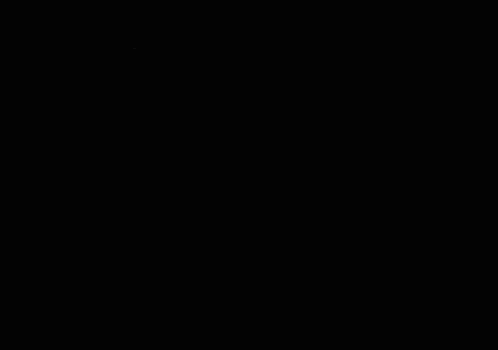
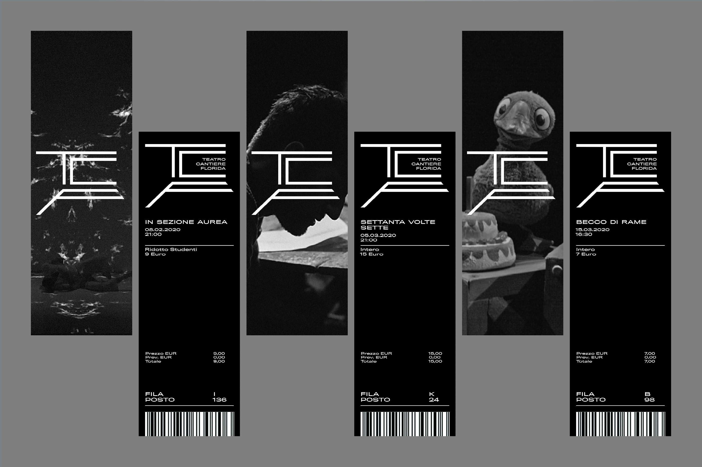
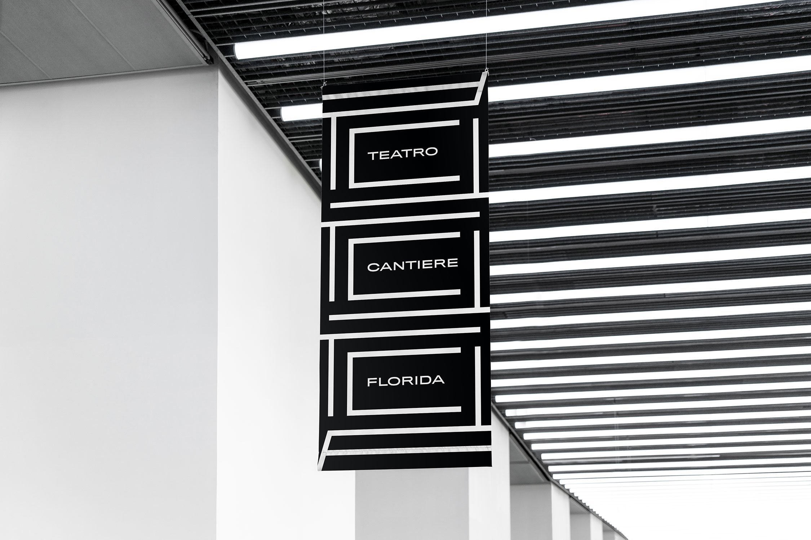
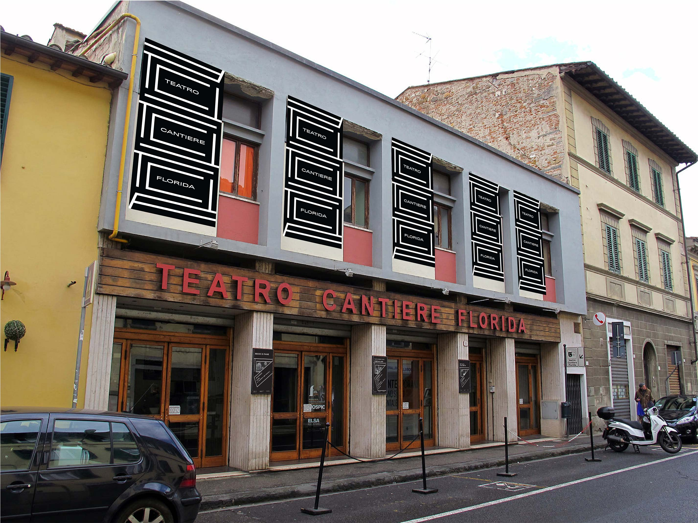
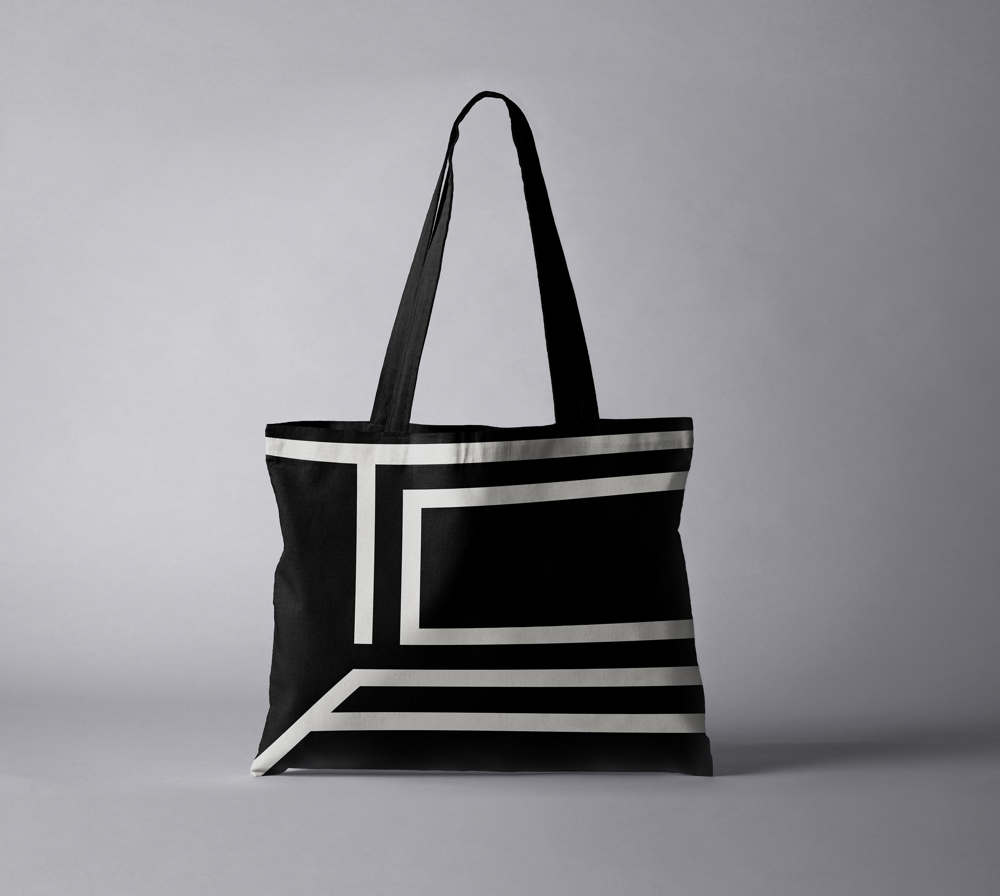
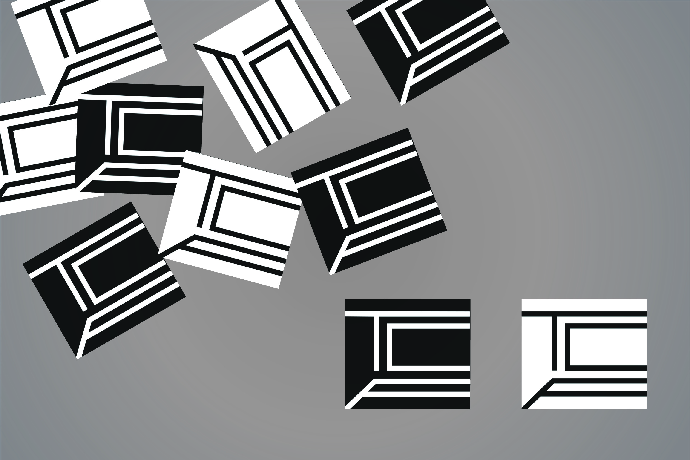

Teatro Cantiere Florida
05.2020
Visual Identity
Various Formats
A Visual Identity for Teatro Cantiere Florida, a contemporary, black box theater in Florence, Italy. The primarily white on black color scheme is meant to resemble the environment of the theater—it is very dark with minimal decoration. The typeface used in all the materials is Titling Gothic FB Extended. It was chosen partially because it reflects the modernity of the theater’s program, and partially because it feels cohesive with the strong, geometric, sans serif typeface used in signage on the facade of the theater. The logo is the initials of the theater, TCF, which form a box. It is based off the appearance of the theater and the stage. “Cantiere” also translates into a construction site or active site. To reflect this, posters and other content have active compositions created via dynamic lines and patterns loosely based off the logo.






Next→